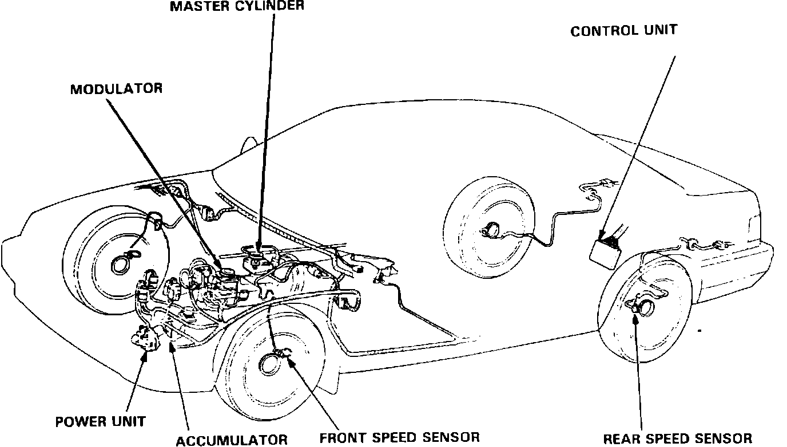
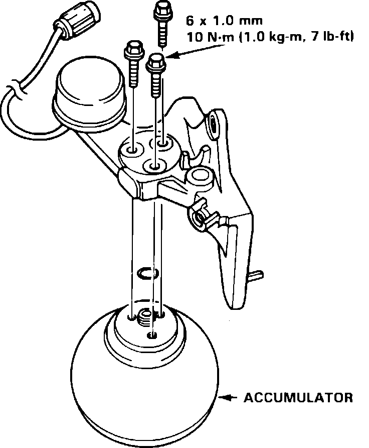

Brake Fluid Accumulator: Service and Repair
Fig. 14 Anti-lock brake system component location:

1. Drain high pressure brake fluid from power unit as follows:
a. Drain fluid from master cylinder and modulator reservoirs, Fig. 14.
b. Remove red cap from bleeder on top of power unit.
c. Using T-wrench 07HAA-SG00100 or equivalent, slowly turn bleeder screw on power unit approximately 1/4 turn and allow brake fluid to collect in reservoir.
d. When pressure diminishes, turn bleeder screw one full turn to allow any residual fluid to collect.
e. Tighten bleed screw, discard fluid, then reinstall cap on bleeder.
2. Disconnect electrical connector, then remove attaching bolts and accumulator/pressure switch assembly.
Fig. 15 Removing accumulator from mounting bracket:

3. Remove flange bolts, then separate accumulator from mounting bracket, Fig. 15.
4. The accumulator contains high pressure nitrogen gas. Do not puncture, heat, or attempt to disassemble accumulator, since serious personal injury may result. To correctly discard accumulator, proceed as follows:
a. Secure accumulator in a vise, with relief plug facing upward.
b. Slowly turn relief plug 3-1/2 turns and allow all pressure to escape. Pressure should be relieved within 3 minutes.
c. Discard accumulator.
5. Reverse removal procedure to install. When assembling new accumulator to mounting bracket, use new O-ring and torque flange bolts to 7 ft. lbs.